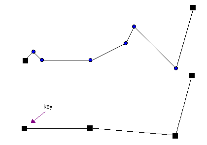

Nth Point
The nth point routine is a naive O(n) algorithm for polyline simplification. It keeps only the first, last, and each nth point. All other points are removed. This process is illustrated below:

The illustration shows a polyline consisting of 8 vertices: {v1, v2 ... v8}. This polyline was simplified using n = 3. The resulting simplification consists of vertices: {v1, v4, v7, v8}.
The algorithm is extremely fast, but unfortunately, it not very good at preserving the geometric features of a line.
Interface
template <unsigned DIM, class InputIterator, class OutputIterator>
OutputIterator simplify_nth_point (
InputIterator first,
InputIterator last,
unsigned n,
OutputIterator result)
Applies the nth point routine to the range [first, last)
using the specified value for n. The resulting simplified polyline is copied to
the output range [result, result + m * DIM), where m is the number of
vertices of the simplified polyline. The return value is the end of the output range:
result + m * DIM.
Input (Type) Requirements
DIMis not zero, whereDIMrepresents the dimension of the polyline- The
InputIteratorvalue type is convertible to the value type of theOutputIterator - The range
[first, last)contains vertex coordinates in multiples ofDIM, e.g.: x, y, z, x, y, z, x, y, z whenDIM= 3 - The range
[first, last)contains at least 2 vertices nis at least 2
In case these requirements are not met, compile errors may occur, or the entire input range [first, last) is copied to the output range [result, result + (last - first)).
Implementation Details
Algorithms don't get much simpler than this. A loop is used to copy the first point and each following nth point of the input polyline to the simplification result. After the loop, I make sure that the last point is part of the simplification.
Usage
unsigned n = 10; // reduce to 10%
std::vector <float> polyline; // original polyline, assume not empty
std::vector <float> result; // resulting simplified polyline
// simplify the 2d polyline
psimpl::simplify_nth_point <2> (
polyline.begin (), polyline.end (),
n, std::back_inserter (result));